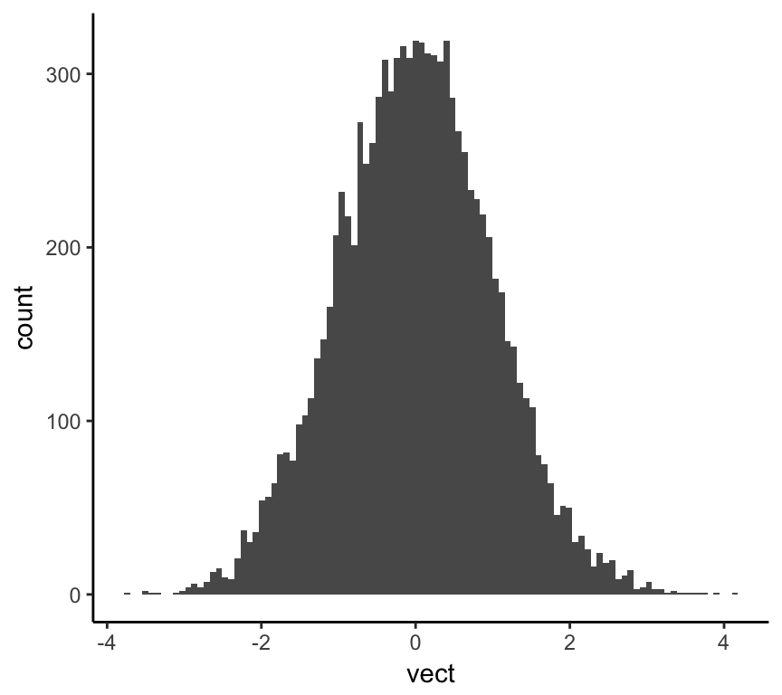
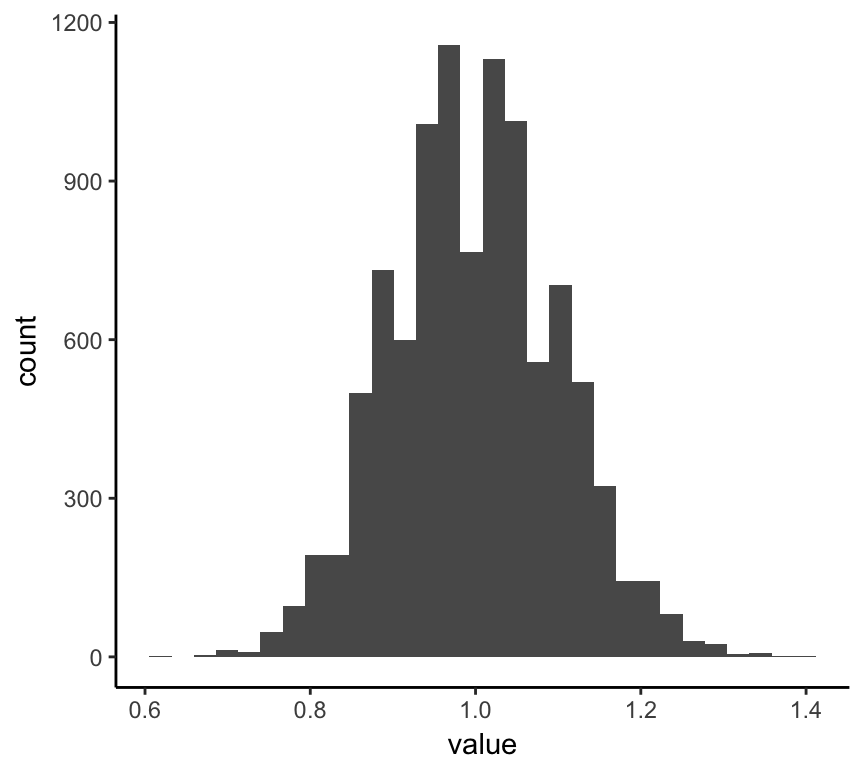

Chapter: 2 Simulation
By the end of this chapter, you will be able to:
- explain the value of simulating data and analysis in R
- use a variety of different methods for generating your own data using R’s built-in random number generators
2.0.1 Why simulate data?
Two major advantages for simulating data are the ability to:
- Test your statistical intuitions
- Experiment with a new technique on known data
2.0.2 Setting the seed
By design, simulations in R are generated randomly. But sometimes you want to reproduce a set of simulations. To do this, you need to use the set.seed() function. Compare the output of the following two code chunks:
c(rnorm(n = 1, mean = 5, sd = 3), rnorm(n = 1, mean = 5, sd = 3))## [1] 0.0131461 5.5723942set.seed(45)
c(rnorm(n = 1, mean = 5, sd = 3), rnorm(n = 1, mean = 5, sd = 3))## [1] 6.022399 2.889979set.seed(45)
c(rnorm(n = 1, mean = 5, sd = 3), rnorm(n = 1, mean = 5, sd = 3))## [1] 6.022399 2.8899792.0.3 Generating samples from probability distributions
First argument is always the number of samples to generate n. Then you provide the parameters of the distribution
rnorm(n, ...)rpois(n, ...)rbeta(n, ...)runif((n, ...))rbinom((n, ...))
2.0.4 Don’t reapeat yourself!
The golden rule of functional programming is “Don’t repeat yourself!” If you find yourself writing the same code more than once, then it is time to abstract and make that code into a function.
sim_hist_plot <- function(vect, bins = 30) {
if (is.data.frame(data) == F) {
data <- as.data.frame(vect)
}
ggplot(aes(x = vect), data = data) +
geom_histogram(bins = bins)
}sim_hist_plot(rnorm(n = 10000, m = 0, sd = 1), bins = 100)
2.0.5 Repetition
To repeat stuff, we can use the replicate() function, which takes two arguments:
nthe number of times to do the thingexprthe thing to do
For example, we can write one line of code that can generate a sample (any size we choose) from a uniform distribution, take the mean of each sample, and plot those means as a histogram.
qplot(replicate(1000, mean(runif(1000, 0, 10))), geom= "histogram", bins = 30)
But what if we want to do this with other types of distributions? Well, we can extend or make a more general version of this function.
sim_means_plot <- function(n_rep, n_samp, d, size, m = 0,
sd = 1, prob = 0.5, min = 0, max = 1,
lambda = 1) {
sims <- switch(d,
normal = replicate(n_rep, mean(rnorm(n = n_samp, m = m, sd = sd))),
binomial = replicate(n_rep, mean(rbinom(n = n_samp, size = size, prob = prob))),
uniform = replicate(n_rep, mean(runif(n = n_samp, min = min, max = max))),
poisson = replicate(n_rep, mean(rpois(n = n_samp, lambda = lambda)))
) %>%
as.data.frame()
names(sims) <- "value"
ggplot(aes(x = value), data = sims) +
geom_histogram()
}Let’s test the function.
sim_means_plot(n_rep = 10000, n_samp = 100, d = "poisson", lambda = 1)## `stat_bin()` using `bins = 30`. Pick better value with `binwidth`.Now that we have set up the basic tools in our simulation toolkit, we can start writing code to improve our statistical intuitions. This is the focus of the rest of this book.